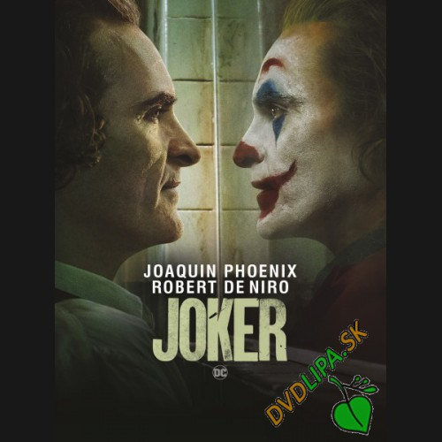

Program kina


Joker
Zkrachovalý komediant Arthur Fleck se dlouho pohybuje na tenké hranici mezi realitou a šílenstvím. Jednoho dne se ve svém obleku klauna potuluje po ulicích Gotham City a dostává se do konfliktu s brutálními zloději. Všemi opuštěný Fleck se začne čím dál více propadat do hlubin šílenství a postupně se mění v ikonu zločinu, kterou svět brzy bude znát pod jménem Joker.
20:50 19:00